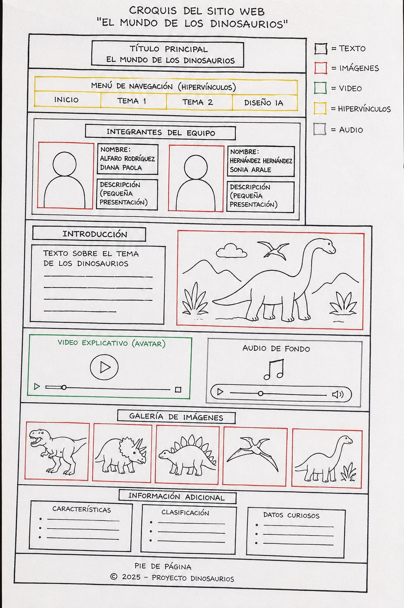

El croquis fue creado mediante inteligencia artificial para organizar los elementos de la página web. Las líneas negras representan texto, las rojas imágenes, las verdes videos, las amarillas hipervínculos y las grises audio. Este diseño sirvió como guía para la elaboración del sitio web sobre dinosaurios.
Esta página muestra el diseño generado mediante inteligencia artificial para organizar imágenes, textos, videos y enlaces del proyecto.